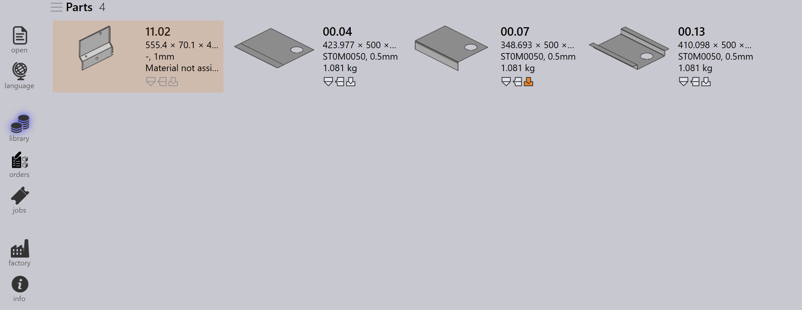

Alur Kerja
TruSmartCAM adalah Manufacturing Execution System yang mengelola dan mengoptimalkan proses manufaktur pelat logam. Alur kerja di TruSmartCAM terdiri dari serangkaian langkah yang Anda ikuti untuk menyelesaikan tugas atau proses tertentu. Anda dapat menyesuaikan alur kerja agar sesuai dengan berbagai proses manufaktur dan mengadaptasinya dengan kebutuhan spesifik Anda. Alur kerja di TruSmartCAM umumnya mencakup langkah-langkah berikut:
1. Konfigurasikan sistem
Konfigurasikan TruSmartCAM agar sesuai dengan lingkungan manufaktur Anda. Langkah dasar ini mencakup pendefinisian mesin beserta kemampuan dan parameternya, penambahan material yang tersedia dan rentang ketebalan, konfigurasi pustaka perkakas dengan punch dan die, pembuatan setup sheet untuk berbagai konfigurasi mesin, dan pengelolaan akun pengguna dengan izin yang sesuai. Sistem yang dikonfigurasi dengan benar memastikan pemrosesan yang akurat dan mencegah kesalahan pada tahap berikutnya. Penyiapan ini biasanya dilakukan sekali selama penerapan awal, dengan pembaruan berkala seiring perkembangan pabrik Anda.
Untuk informasi lebih lanjut, lihat Add/Remove machine, Material, Sheets, Setup tooling, dan Configure users.

2. Tambahkan komponen ke Pustaka
Impor komponen CAD 2D atau 3D ke dalam Pustaka Komponen menggunakan format yang didukung seperti file DXF, DWG, atau STEP. Selama impor, TruSmartCAM secara otomatis menganalisis geometri komponen, memvalidasi kelayakan manufaktur, menetapkan teknologi pelat logam yang diperlukan (laser, punch, atau kombinasi), dan membuat thumbnail pratinjau. Komponen yang diimpor muncul sebagai ubin dalam tampilan Pustaka, tempat ikon berkode warna menunjukkan status komponen, jenis teknologi, persyaratan material, dan setiap masalah yang terdeteksi. Sistem visual ini memungkinkan penilaian kesiapan komponen secara sekilas.
Untuk informasi lebih lanjut, lihat Library.

3. Verifikasi komponen dan perkakas
Tinjau setiap komponen yang diimpor untuk mengetahui potensi masalah produksi. Verifikasi bahwa geometri komponen valid dan dapat diproduksi, penetapan perkakas benar dan tersedia, pilihan material dan ketebalan sesuai dengan inventaris, dan urutan penekukan didefinisikan dengan benar untuk komponen yang dibentuk. Jika masalah terdeteksi, buka komponen di TecZone untuk memodifikasi geometri, menetapkan ulang atau mengoptimalkan perkakas, menyesuaikan parameter pemrosesan, atau mengoreksi spesifikasi material. Menyelesaikan masalah pada tahap ini mencegah penundaan produksi dan mengurangi scrap selama manufaktur.
Untuk informasi lebih lanjut, lihat Part state dan Tooling status.

4. Atur komponen ke dalam pekerjaan
Kelompokkan komponen yang telah divalidasi ke dalam pekerjaan berdasarkan persyaratan produksi. Sebuah pekerjaan merepresentasikan unit produksi logis yang dapat mencakup komponen dari satu pesanan pelanggan, komponen yang berbagi material dan ketebalan yang sama, komponen dengan tenggat pengiriman yang serupa, atau kombinasi berdasarkan strategi produksi Anda. Pekerjaan menyediakan wadah untuk perencanaan, memungkinkan pemrosesan batch komponen terkait, memungkinkan pemanfaatan material yang efisien melalui nesting, serta menyederhanakan pelacakan dan pelaporan. Pekerjaan dapat dibuat secara manual dengan memilih komponen, atau secara otomatis berdasarkan aturan dan filter yang telah ditentukan sebelumnya.
Untuk informasi lebih lanjut, lihat Jobs.

5. Rencanakan pekerjaan ke mesin produksi
Setelah pekerjaan dibuat, tetapkan ke mesin produksi yang sesuai. Pertimbangkan kemampuan mesin termasuk teknologi yang didukung (laser, punch, turret), kapasitas material dan ketebalan, perkakas yang tersedia, dan beban kerja saat ini. Jika terdapat beberapa mesin yang sesuai, pilih berdasarkan prioritas produksi, ketersediaan mesin, persyaratan penyiapan, atau optimasi biaya. Penetapan dapat dilakukan secara manual untuk fleksibilitas atau secara otomatis berdasarkan aturan yang telah dikonfigurasi sebelumnya dan algoritme penjadwalan mesin.
Untuk informasi lebih lanjut, lihat Plan job.

6. Rilis NC untuk pekerjaan
Pada tahap ini, tata letak potong dihasilkan. Anda masih dapat mengedit tata letak dan menambahkan teknologi pemotongan ke tata letak menggunakan TecZone. Setelahnya, ekspor output NC dan transfer ke pengontrol mesin atau lokasi jaringan yang ditentukan. Pekerjaan kemudian dikunci untuk mencegah modifikasi lebih lanjut, dan statusnya diperbarui menjadi "Released" untuk pelacakan produksi.
Untuk informasi lebih lanjut, lihat Send/Recall NC.

7. Selesaikan produksi dan finalisasi pekerjaan
Jalankan pekerjaan yang telah dirilis pada mesin yang ditetapkan. Selama produksi, operator mesin mengikuti program NC, memverifikasi kualitas komponen selama pemotongan, mengelola pemuatan dan pembongkaran material, serta menangani setiap alarm atau masalah mesin. Setelah produksi selesai, tandai masing-masing komponen atau seluruh pekerjaan sebagai selesai di TruSmartCAM. Langkah terakhir ini memperbarui catatan inventaris, mencatat waktu produksi aktual dan penggunaan material, mengarsipkan data pekerjaan untuk pelaporan dan analisis, serta menyelesaikan siklus alur kerja.
Untuk informasi lebih lanjut, lihat Mark complete.